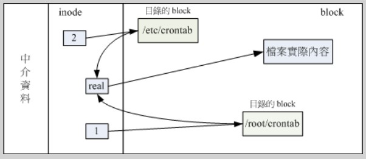
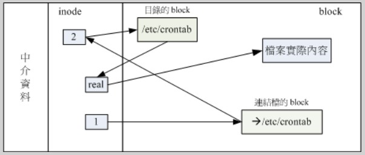

Linux下有两种链接文件, 软链接和硬链接, 虽然都是链接文件, 但两者却有很大的区别. 软链接类似windows下的快捷方式, 硬链接则是通过文件系统的inode链接来产生新文件名, 而不是产生新文件.
ln file1 file2 就是创建硬链接的命令, 而ln -s file file2 就是软链接.(s是symbolic)
inode
要解释清楚两者的区别和联系需要先说清楚 linux 文件系统中的 inode 这个东西。当划分磁盘分区并格式化的时候，整个分区会被划分为两个部分，即inode区和data block(实际数据放置在数据区域中）这个inode即是（目录、档案）文件在一个文件系统中的唯一标识，需要访问这个文件的时候必须先找到并读取这个 文件的 inode。 Inode 里面存储了文件的很多重要参数，其中唯一标识称作 Inumber, 其他信息还有创建时间（ctime）、修改时间(mtime) 、文件大小、属主、归属的用户组、读写权限、数据所在block号等信息。
通常会根据分区的用途来安排inode的数量（这是另外一个话题了），比如文件数量很多而文件都很小，则需要调增inode较大，以便能索引全部文件。否则将会出现这个分区并没有写满而无法写入任何文件的情况。
目录文件与档案文件
目录文件: 记录该目录下的文件名
档案文件: 记录实际文件数据
inode本身并不记录文件名, 文件名记录在目录文件的block当中, 所以增删查改都与目录的W权限有关. 因此当我们要读某个档案时，就务必经过其目录的inode和block，然后才能够找到待读取档案的inode号，最终才会读到正确的档案block内的数据。系统是通过索引节点(而不是文件名)来定位每一个文件。
即: 目录inode（满足权限？） => 目录block => 档案inode（满足权限？） => 档案block
硬链接

多个档名对应同一个inode, 硬链接只是在某个目录下新增一笔档名,链接到某个inode号码的关联记录而已. 如果将上图中的任何一个档案删除, 档案的inode与block都还存在, 依然还可以通过另一个档名来读取正确的档案数据. 此外, 不论用哪一个档名编辑,最终的结果都会写入相同的inode和block中, 因此均能进行数据的修改.
软链接

软链接就是建立一个独立的文件, 而这个文件会让数据的读取指向它link的那个档案的档名, 由于只是作为指向的动作, 所以当来源档案被删除之后, 软链接的档案无法开启，因为找不到原始档名。连结档的内容只有档名，根据档名链接到正确的目录进一步取得目标档案的inode，最终就能够读取到正确的数据。如果目标档案的原始档名被删除了那么整个环节就进行不下去了。
举个栗子
在某个有两个文件的目录下面
1 | $ ls -il |
注意到: AAA和AAAhard的链接数目都是2, inode都是8591796411, 文件大小都是0.
软链接就不举例了. ls source target 即可.